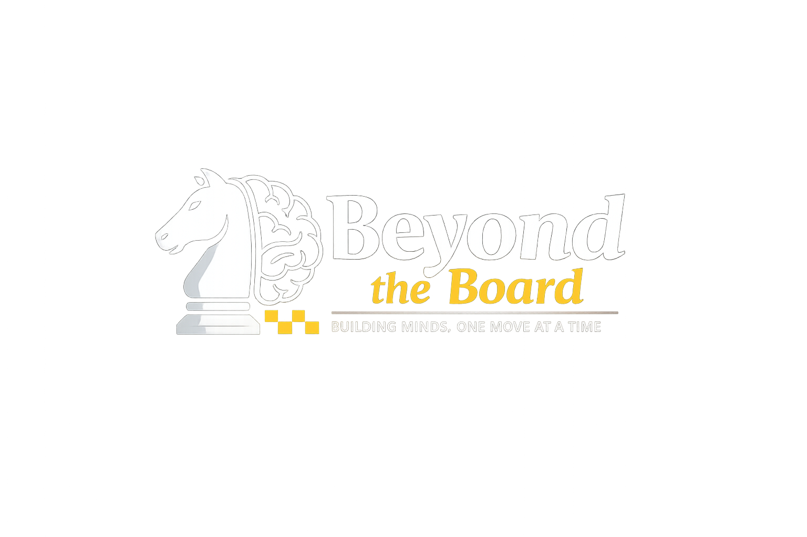

Beginner Lessons
Learn piece movement, rules, checkmate basics, and how to play a full game with confidence.
Student-led chess initiative in Northern Virginia
Beyond the Board teaches chess, strategy, discipline, and confidence through free lessons and community tournaments.

Our Mission
Beyond the Board was created to help students learn chess for free, especially those who may not have access to expensive coaching, tournaments, or chess programs. We believe chess builds patience, focus, problem-solving, and confidence that students can use far beyond the chessboard.
Founder
Yuvvraj is a rising senior at Thomas Jefferson High School for Science and Technology and a competitive chess player with a USCF rating of 1600. He placed Top 10 in Virginia twice and Top 20 nationally in K–5 in 2019. After seeing how much chess shaped his own academic and personal growth, he started Beyond the Board to give more students the same opportunity.
Programs
Learn piece movement, rules, checkmate basics, and how to play a full game with confidence.
Practice forks, pins, skewers, discovered attacks, and puzzle-solving strategies.
Students analyze their games and learn how to improve decision-making move by move.
After several lessons, students can participate in a beginner-friendly community tournament.
Sign up as a student, parent, or volunteer. Replace these buttons with your Google Forms links once you create them.
Contact
Email: team.btbchess@gmail.com
Instagram: @beyondtheboardva